Objectives
Solutions to exercises in Spacebook Application (Part 2)
Exercises
Exercise 1
- Create 5 User objects on the object bench:
- Select names, email address and password of your choice for each.
- Here is a sample constructor invocation that conforms to the User constructor signature and that uses very simple strings :
- Tablulate on paper the friendship relationships depicted in Figure 1.
- Use the object bench to represent the friendship relationships .
- Verify correct implementation of the friendship network using existing User class method(s)
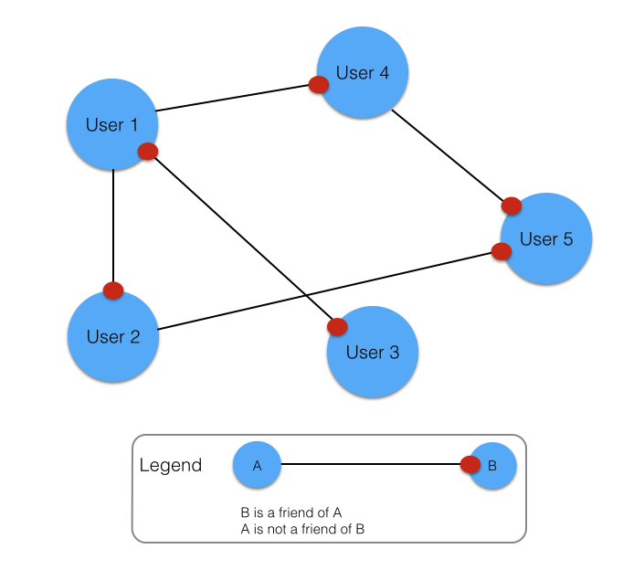
Exercise 1 Solution
-
You could manually create the 5 User objects by clicking on the User class diagram and invoking the User constructor for each object (see Figure 2)
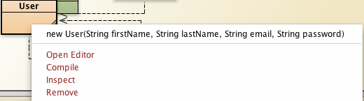
-
An alternative and possibly quicker method would be to use the UserTest class as follows:
- Open UserTest in editor
- Add and simulaneously initialize 5 User fields (see Figure 3)
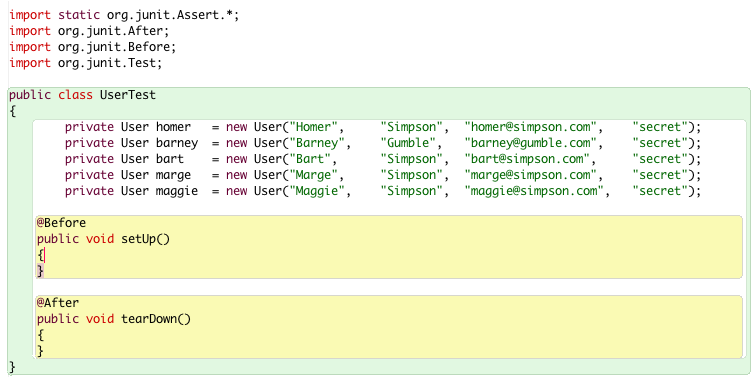
- Compile UserTest
- Invoke Test Fixture to Object Bench on UserText
- This will position the 5 User objects on the object bench
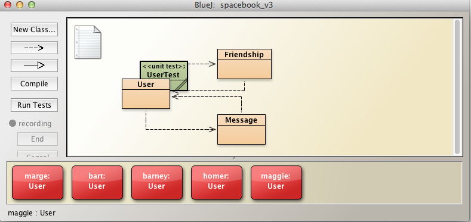
-
Tabular representation of User-Friendship relationships depicted here in Figure 5.
- The table may be created by observing the network of relationships portrayed in Figure 1 above.
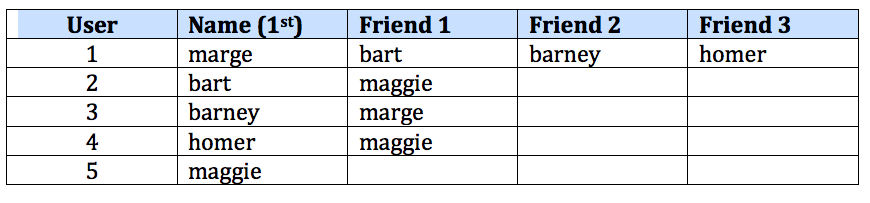
-
Represent (implement) the friendship relationships using the objects on the object bench:
- Marge first, followed by the others:
- Right click on User marge and invoke befriend
- Repeat for barney and homer (see Figure 6).
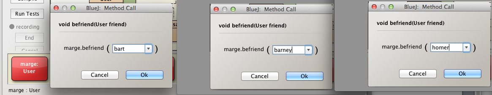
- Check friends have been created:
- Invoke displayFriends on User marge:
- Check the correct list of friends displayed (Figure 7).
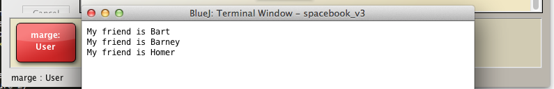
- Repeat the above steps for Bart, Barney, Homer and Maggie.
- Bart: see Figure 8:
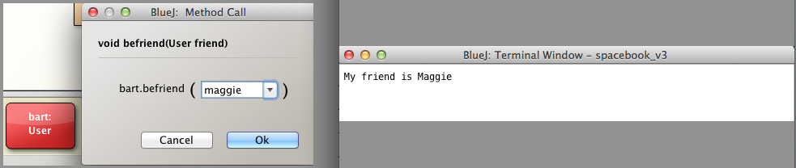
- Barney: see Figure 8:
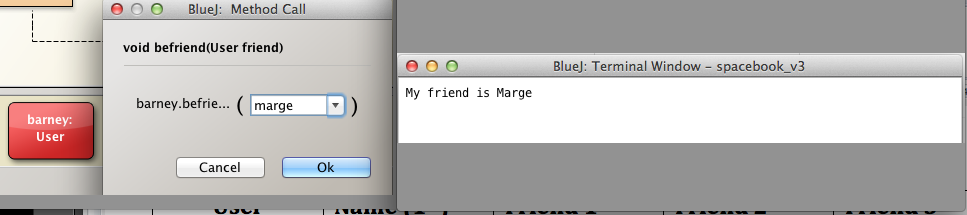
- Homer: see Figure 8:
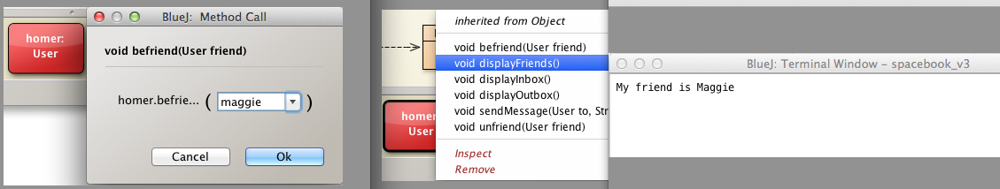
- Maggie: see Figure 8:
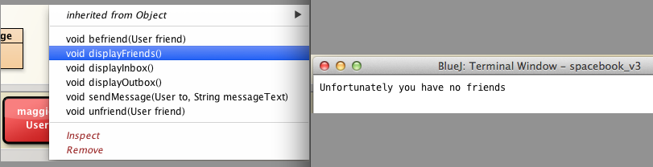
Exercises
Exercise 2
Recall that it is possible for a user to befriend itself.
For example, you could
- create a User object bart and
- invoke befriend on bart
- using bart as a parameter
- invoking displayFriends on bart will demonstrate he has succeeded in befriending himself (see Figure 2).

- This Exercise requires you to modify the method befriend in User to disallow a user befriending oneself.
- Test the refactored method works as intended by invoking it
- Using the invoking object as the argument, that is, attempting to befriend oneself
- Using an object other than the invoking object to establish a friendship.
Exercise 2 Solution
Here is the existing method befriend:
public void befriend(User friend)
{
Friendship friendship = new Friendship(this, friend);
friendships.add(friendship);
}
Here is the same method but refactored to prevent a user befriending oneself:
public void befriend(User friend)
{
if(!(friend == this))
{
Friendship friendship = new Friendship(this, friend);
friendships.add(friendship);
}
else
{
System.out.println("Opps! You seem to have made a mistake in attempting to befriend yourself");
}
}
Test 1 : Attempt befriending oneself
- Remove all friends from marge
- Invoke befriend on User marge using marge as argument.
- This action should fail (see Figure 3).
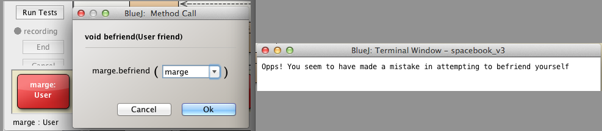
Test 2 : Attempt befriending other user
- Ensure that marge has no friends
- if necessary invoke unfriend to remove any that may be present
- Invoke befriend on User marge using bart as argument.
- Display marge friends to verify refactored befriend still functions correctly (see Figure 4)
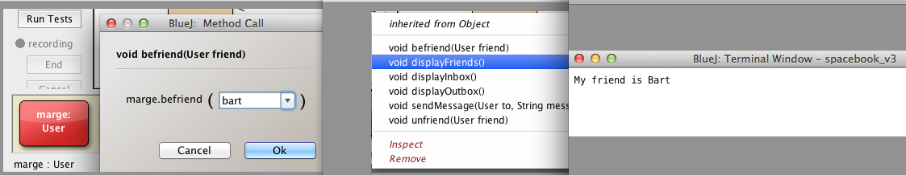
Exercises
Exercise 3
Presently a user can remove a specific friend from its list of friendships by invoking unfriend.
- Write a method that would allow a user to remove all friends.
- Use the signature: public void unfriendAll()
Exercise 3 Solution
Here is a method to remove a user's complete list of friends:
public void unfriendAll()
{
for(int i = friendships.size() - 1; i >= 0; i -= 1)
{
friendships.remove(i);
}
}
We iterate using a for loop from the end of the ArrayList of friendships, removing each element in turn until we reach the last element at index zero.
- See here for a discussion on the technique used.
Test Solution
- Invoke Test Fixture to Object Bench
- As shown in Figure 1, User objects representing marge, bart, barney, homer and maggie will be placed on the object bench.
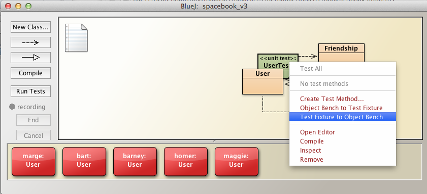
- By invoking befriend, create 3 friends for User marge
- Invoke displayFriends to verify these friends have been created (see Figure 2):
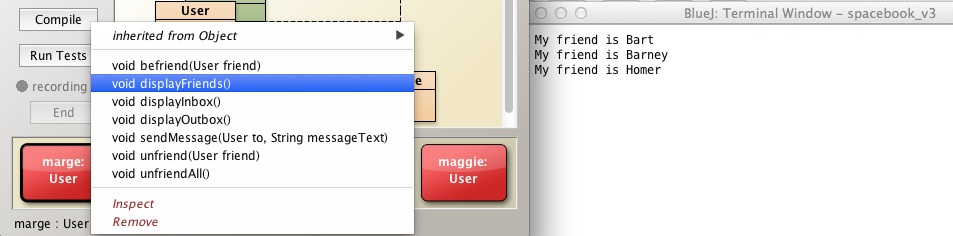
- Test the new method unfriendAll by invoking it on User marge
- Then invoke displayFriends to verify method works as intended (see Figure 3):
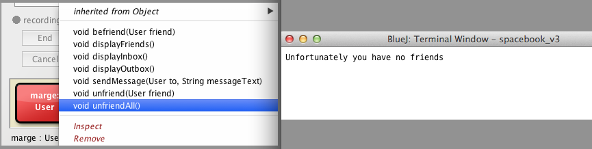
Why does the loop traverse from size-1 to 0 rather then the more usual 0 to size-1?
- Rewrite the method looping from 0 to less than size
- Can you explain the odd behaviour?
Exercise 3 Alternative Solution
Here is an alternative approach using an iterator:
public void unfriendsAll2()
{
Iterator<Friendship> it = friendships.iterator();
while(it.hasNext())
{
it.next();
it.remove();
}
}
You are recommended to study the Iterator API whose documentation is available online here, in particular the remove method, in order to understand why this method works.
Test Alternative Solution
Check that this method, unfriendAll2, behaves similarly to unfriendAll.
- Use UserTest to populate the object bench as before using UserTest method Test Fixture to Object Bench as shown in Figure 1 above.
- Display Marge's friends (as shown in Figure 2). They should be:
- Invoke unfriendAll2.
- Display Marge's friends once more.
- The message Unfortunately you have no friends should be displayed (Figure 4).
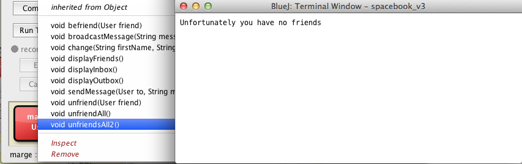
Pitfalls
You may have considered writing the method as follows:
public void unfriendAll3()
{
for(int i = 0; i < friendships.size(); i += 1)
{
friendships.remove(i);
}
}
What, you may ask, would the problem be with this approach?
The problem may be understood by considering the situation where, for example, 10 elements are present in the friendships list.
Here is a table that captures the value of i and the corresponding value of friendships.size() at each iteration in the for loop (Figure 5).
- Remember that as each element is removed from the list of friendships, the value returned by friendships.size() is decremented by 1.
- Therefore, the loop terminates while 5 of the original 10 friendships elements are still present in the array which is not what is required.
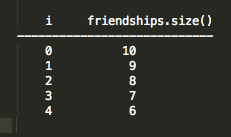
You can reproduce this behaviour and print out some debug information by using the following augmented version of unfriendAll3 as follows:
public void unfriendAll3()
{
for(int i = 0; i < friendships.size(); i ++)
{
System.out.println("i "+i+" size "+friendships.size());
friendships.remove(i);
}
System.out.println();
System.out.println("Number of elements remaining *friendships* list is: "+friendships.size());
for(int i = 0; i < friendships.size(); i ++)
{
Friendship f = friendships.get(i);
System.out.println(f.sourceUser.firstName + "'s friend is "+f.targetUser.firstName);
}
}
Add this method to User and test using the same approach as above to populate the object bench with the usual 5 User objects.
is shown in Figure 7.
- This results in removing all the elements from the friendships list as required.
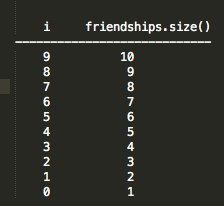
Exercises
Exercise 4
- Introduce additional fields in User as follows:
int age;
String nationality;
- Modify the overloaded constructor to includes parameters representing these fields.
- Apply this signature:
- public User(String firstName, String lastName, int age, String nationality, String email, String password)
- Initialize the new fields within the constructor.
Exercise 4 Solution
Here is an extract from User class that contains the additional fields and the new overloaded constructor:
public class User
{
String firstName;
String lastName;
int age;
String nationality;
String email;
String password;
ArrayList<Friendship> friendships = new ArrayList<>();
ArrayList<Message> inbox = new ArrayList<>();
ArrayList<Message> outbox = new ArrayList<>();
public User(String firstName, String lastName, int age, String nationality, String email, String password)
{
this.firstName = firstName;
this.lastName = lastName;
this.age = age;
this.nationality= nationality;
this.email = email;
this.password = password;
}
...
...
}
Test
- Add the new code
- Compile the class
- Instantiate the class using the new overloaded constructor as depicted in Figure 1.
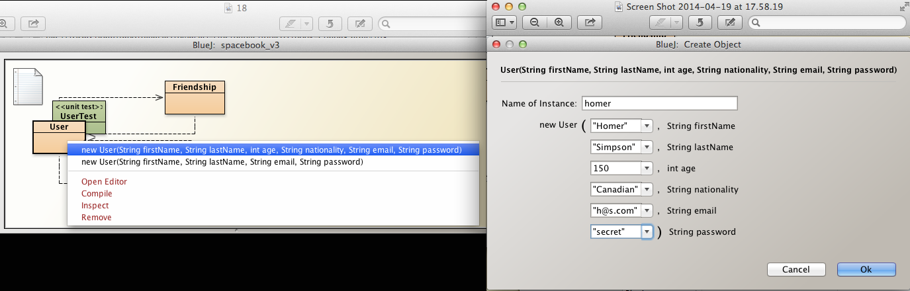
- Inspect the object state using the inspector (see Figure 2).
- Verify the state matches the data you input.
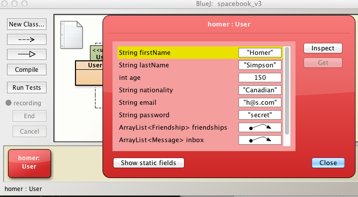
Exercises
Exercise 5
- Introduce a method named change to the User class with the following signature:
- public void change(String firstName, String lastName, int age, String nationality, String email, String password)
- Implement the method.
- Modify the implementation of the overloaded constructor implemented in an earlier step as follows:
- Do not directly assign the actual parameter values to the instance variables
- Example: this.firstName = firstName;
- Instead, invoke the change method
- Reason: Apply where possible the Do not repeat yourself (DRY) policy.
- We have already discussed DRY in an an earlier session (session03 & lecture 5).
- Carry out the following tests:
- Create an instance of User using the new constructor.
- Verify the state of the object using the inspector.
- Change the object's state using the change method.
- Again, verify the object's state is correct.
Exercise 5 Solution
Here is the code for change:
public void change(String firstName, String lastName, int age, String nationality, String email, String password)
{
this.firstName = firstName;
this.lastName = lastName;
this.age = age;
this.nationality= nationality;
this.email = email;
this.password = password;
}
Here is the overloaded constructor we added earlier:
public User(String firstName, String lastName, int age, String nationality, String email, String password)
{
this.firstName = firstName;
this.lastName = lastName;
this.age = age;
this.nationality= nationality;
this.email = email;
this.password = password;
}
And here is the refactored version of this same constructor:
public User(String firstName, String lastName, int age, String nationality, String email, String password)
{
change(firstName, lastName, age, nationality, email, password);
}
Tests
- Recall the tests to be carried out:
- Create an instance of User using the new constructor.
- Verify the state of the object using the inspector.
- Change the object's state using the change method.
- Again, verify the object's state is correct.
Create a User instance in the usual manner
- Use the overloaded constructor as instructed (see Figure 1)
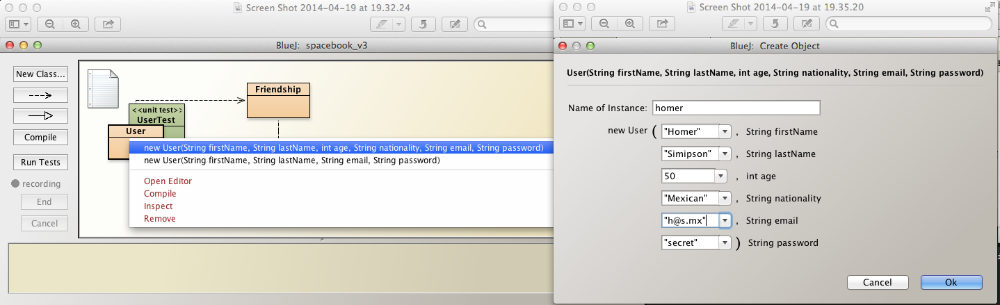
- Use the inspector to verify the object's state (see Figure 2)
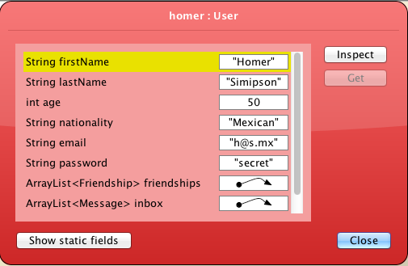
- Invoke change on the object
- Make some changes to the object state (see Figure 3 for suggestions)
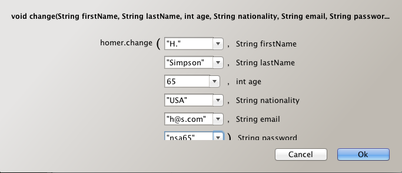
- Verify the changes by using the inspector (see Figure 4)
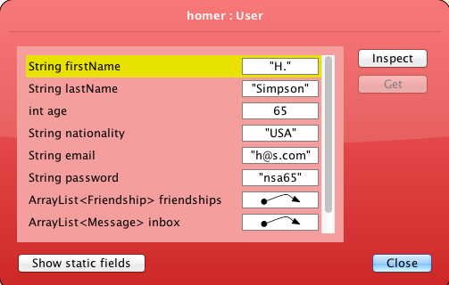
Exercises
Exercise 6
- Introduce a method to broadcast a message from a particular user to all its friends.
- The signature of the method is:
- public void broadcastMessage(String messageText)
- Test the method as follows:
- Use the UserTest as previously (or othe methods) to populate the object bench with 5 User objects.
- The network of friendships established in Exercise 1 should be present.
- Marge has befriended Bart, Barney and Homer:
- Marge broadcasts a message
- Check Marge's outbox
- Check the inbox of the intended recipients.
Exercise 6 Solution
This Exercise is solved by
- composing the text of a common message destined for the target group
- this would be done in testing
- iterating across all the friendships and in each iteration:
- composing a Message object for each friend
- each message object will contain the same common message
- adding the Message objects to the outbox of the sender
- adding each Message object to the inbox of the recipient
Here is an implementation followed by an explanation:
public void broadcastMessage(String messageText)
{
for(Friendship f : friendships)
{
Message message = new Message(this, f.targetUser, messageText);
outbox.add(message);
f.targetUser.inbox.add(message);
}
}
The enhanced for loop iterates across all the elements in the ArrayList of Friendships:
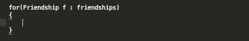
For each iteration in the for loop create a Message object (Figure 2).
- Study the source for the Message class
- The first parameter, this, is assigned to User from in the Message object.
- Study the source for the Friendship class
- The second parameter, f.target refers to User targetUser in the Friendship object
- this is assigned to User to in the Message object.
- The third parameter, messageText, is the text of the message
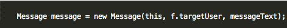
The message object is then added to the outbox (Figure 3)
Finally, the message is added to friend's inbox (Figure 4).
- Note that we are availing of the fact that
- Message, Friendship and User are in the same package
- Thus the instance variables in these classes are directly accessible since the do not have access modifiers
- Message field User to
- Friendship field User targetUser
- Because of this, we have made a decision not to use setter or getter methods.
Test
- Follow the steps in Exercise 1 to create 5 User objects on the object bench with the same network of friendships as depicted in Figure 1 in Exercise 1.
- Marge broadcasts to her friends:
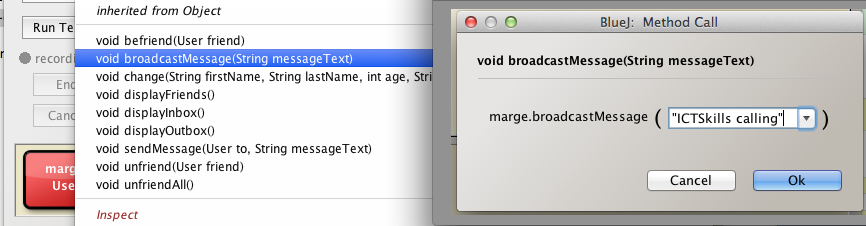
- Check Marge's outbox and observe the message objects have been added:
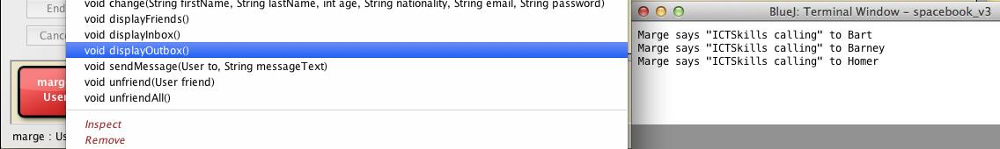
- Check inbox of targets, namely Bart, Barney and Homer:
- Each should have received Marge's broadcast message
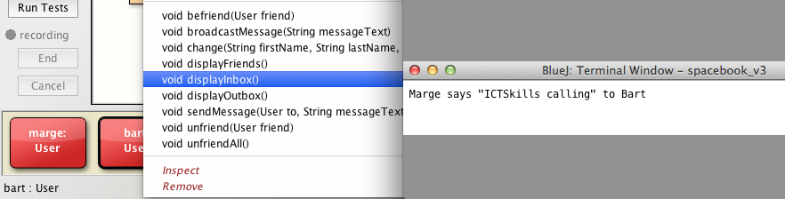